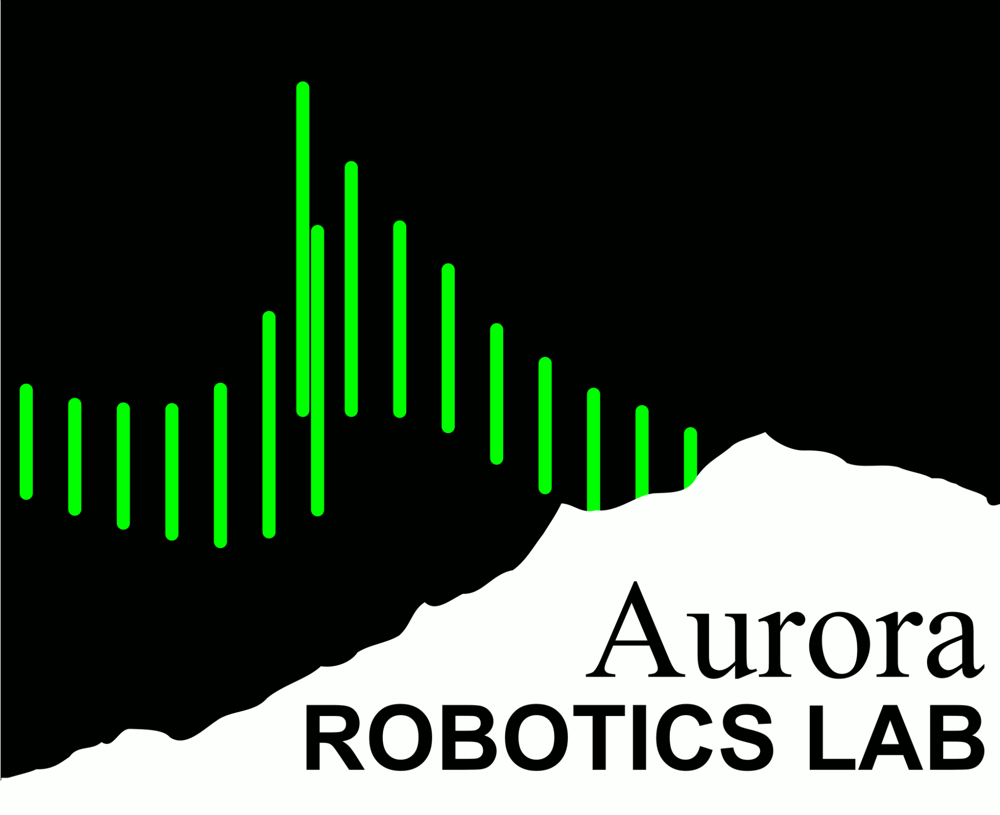

Since 2013, UAF's Aurora Robotics Lab has designed and built autonomous robots for a variety of complex tasks including NASA competitions and centennial challenges.
For the 2022-23 academic year we're going after NASA's Break The Ice lunar permafrost mining challenge, with our basic technical approach described in our Phase 1 video (overall approach) and Phase 2 video (prototype in operation). We're currently working to tune and automate our prototype mining robot, with the goal of excavating and hauling 12 tonnes of simulated lunar permafrost in 15 days during the summer of 2023.
|
|
2021 NASA Break The Ice Challenge, Phase 1 Goal: Design a robot capable of mining lunar permafrost from permanently shadowed craters, and hauling the resulting water up to a human habitat in the sunlight. Results: We won a $25,000 prize for our Phase 1 writeup, which is funding our current operations. We are working to make our prototype robust enough to mine tonne quantities of a concrete-based lunar regolith simulant, and will demonstrate this for NASA during phase 2 in 2023. |
|
|
Caterpillar 2019 Robotic Mining Competition Goal: Excavate through 30cm of packed dust to excavate "icy regolith". Results: We won the "Lightest Robot" award despite using a steel frame, thanks to careful finite element analysis. We developed expertise doing TIG welding of both the 4130 steel in the frame, and stainless in the mining buckets. We give demonstrations with this robot at Engineering Open House in February. |
|
|
NASA 2016 Robotic Mining Competition Goal: Excavate fluffy basalt dust lunar regolith simulant. Results: We developed a new approach for lightweight 3D printed tracks, which we have refined in subsequent years. The polypropylene straps are extremely lightweight, while being impact resistant and surprisingly durable. |
|
|
NASA 2014 Robotic Mining Competition Goal: Excavate a thin layer of fluffy basalt dust, simulating lunar regolith. Results: We won the "Judges' Innovation Award" from NASA for our unfolding wheel design, and computer vision based autonomous localization approach. Our team was also invited to Hawaii for the PISCES robotics competition (basaltic test area shown). This robot breaks down into parts small enough to fit into normal suitcases. |
Current development is organized on our Discord server, with our public source code and CAD on GitHub, and our development documentation on our Google Drive. Please join us, we need students of all disciplines!
Dr. Orion Lawlor is the UAF faculty member that leads the lab (@AlaskaLawlor on Twitter). Our on-campus research lab space is in ELIF 118 behind the engineering machine shop.
Our lab has consistently received support from the Alaska Space Grant for robot construction supplies and tools, and from CEM and URSA for travel support.
Robotics will first transform Earth agriculture, construction, and mining, by allowing teleoperation and low-energy remote operations. This technology will also be key as we develop space resources, which will both reduce human civilization's footprint on Earth's ecosystem, and vastly expand the energy and material available to improve human lives.
Students from our lab have used the skills they developed here to earn good jobs at cutting-edge organizations including SpaceX (designing and fabricating Starship nose cones), NASA JPL (applying machine learning to space robotics problems), and Caterpillar (developing autonomous earthmoving equipment).
{kind=link}